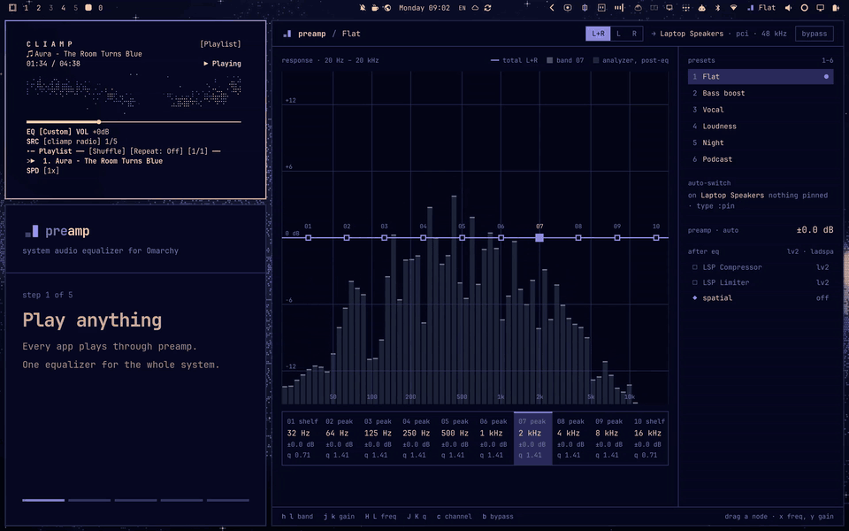
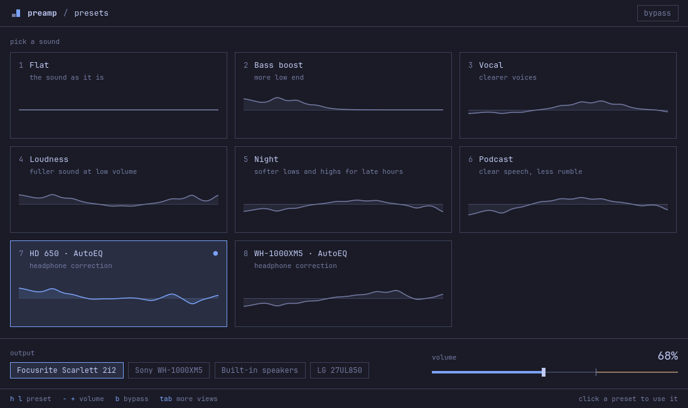
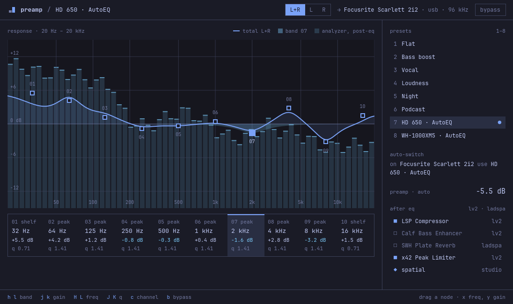
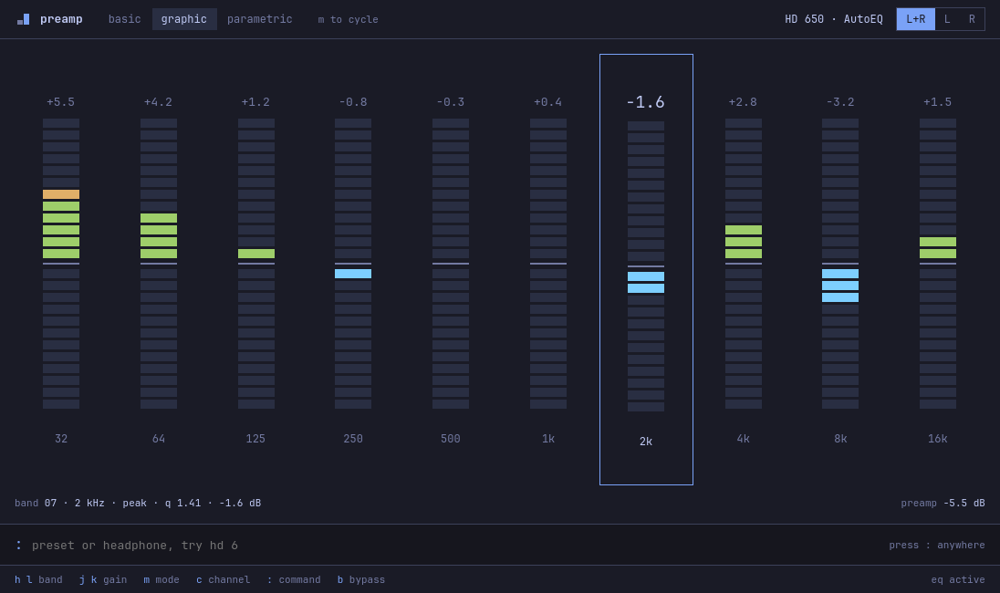
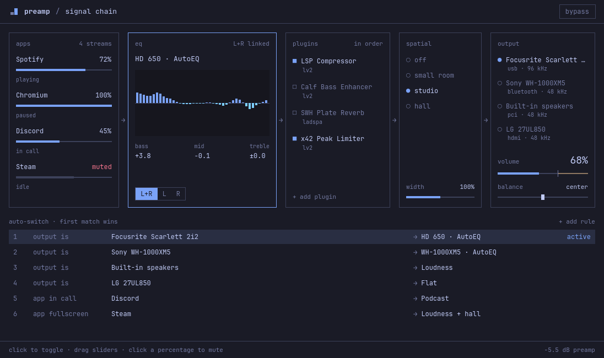

Tune everything you hear on Omarchy.
Every app plays through preamp into your speakers or headphones. Pick a preset from the bar, shape ten bands in the window, or load a correction curve for your headphones.

Four commands and it's on the bar.
You need Omarchy with the Omarchy shell, PipeWire and WirePlumber.
pacman installs the dependencies. The service starts now and at each login. The last command puts the preamp widget on the Omarchy bar.
bin/install builds the package with makepkg, installs it, starts the service and puts the widget on the bar.
Everything between your apps and your speakers.
Four views. tab moves between them.
The presets view is the everyday view. Studio, Modes and Signal chain have the detailed controls. The window opens on the view you used last.




Correct your headphones by name.
preamp reads the AutoEq profiles, more than 6,000 headphones. Give it the name of your model and the correction becomes a preset.
Type :pin in the command bar and the preset applies each time that output is selected. When you connect those headphones again, preamp moves to them and applies it.
Your hands stay on the keyboard.
Press ? in the window to show the keys for the view.
presets view
- h l ← →
- previous or next preset
- j k ↓ ↑
- preset above or below
- - +
- volume down or up by 5%
- 1–8
- apply a preset
- b
- bypass the equalizer
- tab
- next view
- q
- quit
other views
- h l ← →
- select a band
- j k ↓ ↑
- band gain down or up
- H L
- band frequency down or up
- J K
- band Q down or up
- 0
- set the band gain to 0
- c
- channel: L+R, L or R
- m
- mode: basic, graphic or parametric
- :
- open the command bar
command bar · also finds presets and AutoEq profiles
- w NAME
- save the curve as a preset
- rm NAME
- delete a saved preset
- pin
- apply this preset each time this output is selected
- unpin
- remove the pin from this output
Script it.
Each command starts the audio service if it is not running, exits with 0 or 1 and writes errors to stderr. Add --json to get the full answer of the service.
To teach coding agents to use these commands, run preamp skill install.
One sink in front of your output.
The preamp.service user service runs preamp daemon. The daemon creates a PipeWire sink named preamp and makes it the default output. Apps play into this sink. The daemon runs the audio through the equalizer and plays it into the output that you select.
- When you select an output in the Omarchy audio panel, preamp plays into that output and stays the default.
- When you connect headphones that you used before, preamp moves to them, applies their pinned preset and shows a notification.
- The volume in preamp is the volume of the output device.
- On a laptop with an Omarchy speaker tuning, preamp plays into the tuning, so the tuning still applies.
- When the service stops, it gives the default output back to the device that it played into.
- Settings live in ~/.config/preamp/config.json. The AutoEq index is cached in ~/.cache/preamp/ for one week.